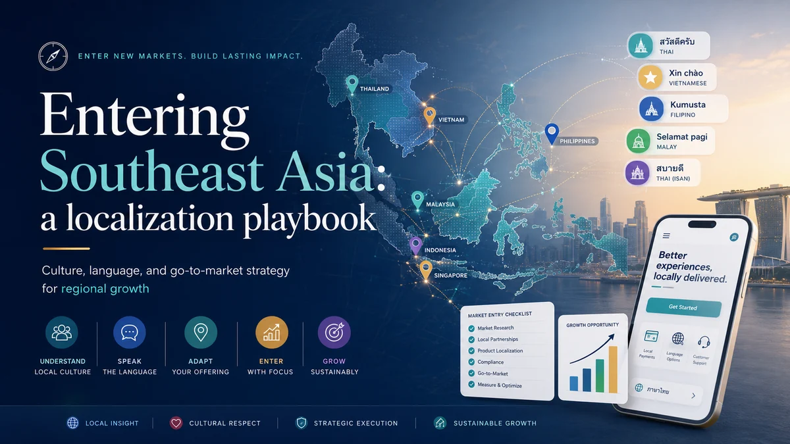

Entering Southeast Asia: a localization playbook
SEA is Google-dominant, deeply multilingual, and WhatsApp-first. Global and Korean brands that treat it as a single homogenous market — or paste in their English-language strategy — find themselves invisible to the buyers they're trying to reach.
Southeast Asia is not a market. It's a collection of distinct markets that share geography and some surface-level similarities but differ meaningfully in language, consumer behaviour, purchasing power, and digital infrastructure. Working from Kuala Lumpur gives us a front-row seat to the region: we see Korean beauty brands land in Malaysia with a direct copy of their Seoul strategy, European SaaS companies launch with English-only sites and email-only contact forms, and regional conglomerates assume that what works in Singapore will transfer intact to Indonesia. Most of these entries underperform, and the cause is almost always the same — the brand treated localization as a translation task rather than a market-entry strategy.
The platform landscape: Google, yes — but not everything
Unlike Korea (where Naver holds significant search share) or Japan (where Yahoo Japan retains a meaningful audience), Southeast Asia is broadly Google-dominant for search. In Malaysia, Singapore, Thailand and Indonesia, Google accounts for the overwhelming majority of organic search traffic. This is genuinely good news for brands coming from markets where Google is also primary — the fundamentals of SEO transfer. The complication is that "Google-dominant" doesn't mean "English-dominant." Queries in Bahasa Malaysia, Bahasa Indonesia, Thai, and Traditional Chinese all behave differently in terms of search volume, competition, and intent patterns. A brand that has only mapped its English keyword universe has mapped a fraction of the actual opportunity.
Social platforms add further complexity. TikTok is a genuine discovery engine in this region for younger consumers, particularly in Malaysia and Thailand. Facebook remains heavily used by older demographics and in markets like Indonesia and the Philippines. LINE dominates in Thailand. The through-line across all of these is mobile-first behaviour — desktop is secondary for most consumer-facing searches and enquiries.
The WhatsApp-first reality
This is the single most common miscalibration we see from brands entering SEA: assuming that contact forms and email are adequate enquiry channels. They are not. WhatsApp is the default communication tool for business enquiries across Malaysia, Singapore and increasingly across the region. When a potential customer in KL has a question about your product, they expect to be able to tap a WhatsApp button and get a response within hours, not submit a form and wait for an email reply the next day.
For Korean and global brands accustomed to KakaoTalk or LINE or formal email channels, this requires a genuine operational change — not just adding a WhatsApp number to the website footer, but staffing a response workflow that matches the speed expectation of the channel. We've seen enquiry rates double when a client adds a properly configured WhatsApp CTA compared to their previous email-only contact form, with no other changes to the page.
What Korean brands get wrong entering SEA
Korean brands have genuine advantages entering Southeast Asia. Korean popular culture — music, drama, food, beauty — carries real affinity in Malaysia, Singapore and Thailand in particular. That affinity creates an opening, but it doesn't close the sale on its own.
The most common mistakes we see:
- Assuming the Korean playbook ports directly. The SEO, content and social strategies that work in Korea are built around Naver and KakaoTalk. They don't map cleanly onto Google and WhatsApp. The audience research, keyword strategy and content formats all need to be rebuilt for the SEA context.
- English-only content with no Malay, Chinese or Thai. In Malaysia, a significant share of buyers prefer Bahasa Malaysia or Simplified/Traditional Chinese. In Thailand, Thai-language content is essentially required for any credible consumer-facing presence. English-only may reach the premium urban segment but misses a large portion of the addressable market.
- Pricing and sizing assumptions. What is considered mid-range pricing in Seoul may be premium or aspirational in parts of Southeast Asia — or, in Singapore, it may appear affordable. Brands that launch with a single price point across the region without market-specific positioning often find traction in only one or two countries.
- Trusting machine translation for marketing copy. The same issue applies as in any market: translated copy that hasn't been reviewed by a native speaker reads as translated. In categories where trust is high-stakes — financial services, healthcare, luxury goods — this erodes brand credibility quickly.
Kuala Lumpur as a regional hub
From a practical market-entry standpoint, Kuala Lumpur has genuine advantages as a regional base. It is multilingual by default — English, Malay, Mandarin and Tamil are all in active business use — which means talent that can produce content across multiple language tracks is available in the same city. Time zones are compatible with Singapore (same zone), Indonesia (one hour ahead in WIB), Thailand (one hour behind) and Korea (one hour ahead). Operating costs are lower than Singapore while infrastructure quality is comparable for digital operations.
A common pattern we support is a brand that enters Malaysia first — using it as a test market and operational base — then expands into Singapore (high purchasing power, English-comfortable, smaller market), followed by Thailand and Indonesia (much larger addressable markets but requiring more investment in localised content and channel management). This staged approach lets brands prove their messaging and operational model before committing to the operational complexity of Thailand and Indonesia simultaneously.
What localization actually means in practice
Localization is not translation. Translation converts words. Localization converts meaning, context, and trust signals. For a brand entering Malaysia, that means:
- Keyword research done in Bahasa Malaysia and Mandarin, not just English — the search terms your customers use in their own language are rarely direct translations of the English terms you rank for at home.
- Landing pages that reference local context: local pricing if applicable, local case studies or social proof, local contact details, and a WhatsApp button that works.
- Content written by people who live in and understand the market — not produced overseas and spot-checked by a native speaker. The difference in quality and credibility is visible to local readers.
- Technical SEO that handles hreflang correctly if you're serving multiple language variants, with the right canonical and alternate tags to avoid duplicate content signals across language versions.
- A local entity or at minimum a local business address visible on the site. In several SEA markets, buyers are wary of transacting with companies that don't show a credible local presence.
Frequently asked questions
Do I need separate websites for each SEA country, or can I use one site with language folders?
Neither approach is universally correct. A single site with language/country subdirectories (e.g. /my/, /sg/, /th/) works well if your content strategy and hreflang implementation are sound — it concentrates domain authority. Separate ccTLD sites (e.g. .com.my, .co.th) can signal local relevance strongly but require more link-building effort per domain. We help clients decide based on their content volume, team structure, and timeline.
Is SEO in Southeast Asia as competitive as in more mature markets?
It varies sharply by category and language. English-language SERPs in competitive categories — finance, insurance, e-commerce — are often as competitive as equivalent English-language searches in the UK or Australia. Malay-language and Thai-language SERPs in many niches are materially less competitive, meaning well-executed content in those languages can rank faster and hold positions more durably. This is the core arbitrage opportunity that localized SEA strategies exploit.
How long does a realistic SEA market entry take to show organic traction?
For Google SEO, the timeline is similar to any market: three to six months for initial movement on less competitive terms, six to twelve months for meaningful organic traffic in competitive categories. The advantage of starting in SEA with properly localised content is that competitive intensity on non-English queries is often lower, which compresses the timeline compared with English-only strategies in saturated markets.
Considering Southeast Asia for your next move?
We provide SEO, content, and market-entry strategy for brands entering Malaysia, Singapore, Thailand and Indonesia. Tell us where you are and where you want to go — we'll map the path.
Chat on WhatsApp →